<!DOCTYPE html>
<html lang="en">
<head>
    <meta charset="UTF-8">
    <meta name="viewport" content="width=device-width, initial-scale=1.0">
    <title>ROSSO ELECTRONICS</title>
    <link href="https://cdn.jsdelivr.net/npm/bootstrap@5.3.2/dist/css/bootstrap.min.css" rel="stylesheet" integrity="sha384-T3c6CoIi6uLrA9TneNEoa7RxnatzjcDSCmG1MXxSR1GAsXEV/Dwwykc2MPK8M2HN" crossorigin="anonymous">
    <link rel="stylesheet" href="./css/main.css">
</head>
<body>
    <header class="site-header">
        <div class="container">
            <div class="site-header__inner">
                <a href="" class="logo-link">
                    
                </a>
                <nav class="site-header__nav nav">
                    <ul class="nav__list">
                        <li class="nav__item">
                            <a href="#about_company" class="nav__link">О компании</a>
                        </li>
                        <li class="nav__item">
                            <a href="#structure" class="nav__link">Организационная структура</a>
                        </li>
                        <li class="nav__item">
                            <a href="#etika" class="nav__link">Правила поведения сотрудников</a>
                        </li>
                        <li class="nav__item">
                            <a href="#iframe" class="nav__link">Карта офиса</a>
                        </li>
                    </ul>
                </nav>
            </div>
        </div>
    </header>
    <main class="site-main">
        <section id="about_company" class="site-main__hero hero">
            <div class="container">
                <div class="hero__inner">
                    <h1 class="hero__title">О компании</h1>
                    <ul class="hero__list">
                        <li class="hero__item card">
                            
                            <div class="card__box">
                                <h2 class="card__title">История</h2>
                                <p class="card__text">
                                    Когда-то очень давно, основатели компании, занимались обычной торговлей бытовой техники, и это было началом достигнутых сегодняшних результатов. Тот опыт, который был получен в процессе торговых отношений, был применен с максимальной пользой. 2014-год был отправной точкой развития брэнда Rosso. В этот год были осуществлены первые шаги. С первых дней, как своему малышу стараясь дать всё самоё лучшее, основатели с особым трепетом выбирали лучших производителей бытовой техники поднебесной. И снова полученный опыт стал крепким фундаментом для освоения производства в 2017 году, и 25 апреля 2017 года в этих целях было организовано Общество с Ограниченной Ответственностью “Rosso Electronic Technologies”
                                </p>
                            </div>
                        </li>
                        <li class="hero__item card" data-aos="fade-up" data-aos-duration="1500">
                            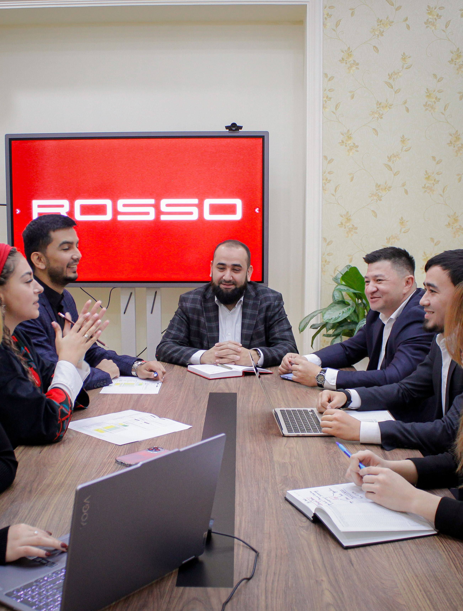
                            <div class="card__box">
                                <h2 class="card__title">Сегодня</h2>
                                <p class="card__text">
                                    2017 год это стал переломным годом, когда словно ты окончил высшее учебное заведение и теперь тебе необходимо двигаться самостоятельно по волнам большого океана, океана под названием жизнь. И тогда ты понимаешь, что то, что тебе было даровано прежде, все те сложности, весь тот опыт, который ты получал порой приводящий тебя в беспомощное состояние, было ниспослано тебе Господом для укрепления тебя и дарования тебе ещё больших высот. Сегодня, чтобы с уверенностью смотреть в будущее, со стороны руководства компании предпринимаются все необходимые меры для того чтобы покупатели, также как и наши родные и близкие, были довольны своей покупкой и довольны нами. Сегодняшний мир, мир современных технологий учит тебя уметь балансировать между высокими скоростями и безопасностью, невысокими стоимостями и качеством, гениальной технологической сложностью и функциональной простотой, получения наслаждения от мгновений и большим разнообразием, и всё это объединяется в продукции под брэндом “Rosso”.
                                </p>
                            </div>
                        </li>
                        <li class="hero__item card" data-aos="fade-up" data-aos-duration="1500">
                            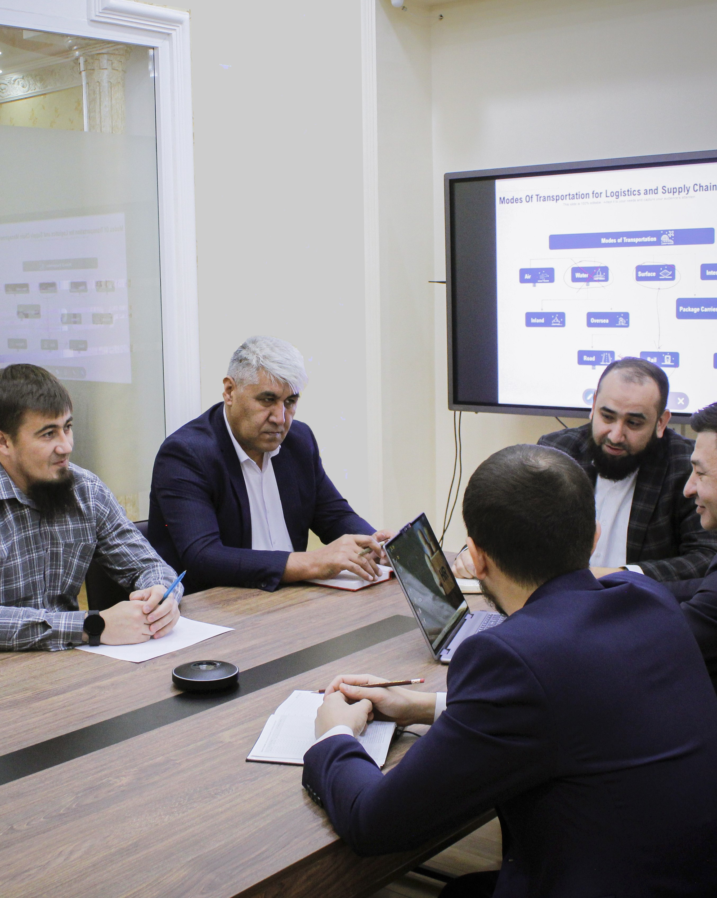
                            <div class="card__box">
                                <h2 class="card__title">Направление деятельности</h2>
                                <p class="card__text">
                                    ООО “Rosso Electronic Technologies” на своих производственных мощностях производит современные телевизоры, начиная с 32 диагонали и до 75 диагонали, 12 модификаций современных газовых плит, полуавтоматические стиральные машины. Необходимо отметить тот факт, что вся продукция производится с применением качественных комплектующих, а дизайн продукции порадует вас своим разнообразием. ООО “Rosso Electronic Technologies” не стоит на месте и стремительно развивается и с каждым годом пополняет линейку продукции новыми, а самое главное современными и востребованными видами бытовой техникой. Со стороны, ООО “Rosso Electronic Technologies” были установлены для себя очень высокие стандарты и требования, для того чтобы вы могли насладиться вашим приобретением, как от высокого качества, так и доступности.
                                </p>
                            </div>
                        </li>
                    </ul>
                </div>
            </div>
        </section>
        <section style="margin-bottom: 100px;" id="structure" class="site-main__structure structure">
            <div class="container">
                <div class="structure__inner">
                    <h2 class="structure__title">Организационная структура</h2>
                    <ul class="main-department"></ul>
                    <h2 class="depart__title">Департаменты</h2>
                    <div class="depart-wrapper">
                        <details class="structure__details">
                            <summary>Администрация</summary>
                            <ul class="details-list axo"></ul>
                        </details>
                        <details class="structure__details">
                            <summary>CPO (Chief Product Officer)</summary>
                            <ul class="details-list cpo"></ul>
                        </details>
                        <details class="structure__details">
                            <summary>CFO (Chief Financial Officer)</summary>
                            <ul class="details-list cfo"></ul>
                        </details>
                        <details class="structure__details">
                            <summary>CCO (Sales department)</summary>
                            <ul class="details-list cco1"></ul>
                        </details> 
                        <details class="structure__details">
                            <summary>CCO</summary>
                            <ul class="details-list cco2"></ul>
                        </details> 
                        <details class="structure__details">
                            <summary>Отдел контроля качества</summary>
                            <ul class="details-list okk"></ul>
                        </details> 
                        <details class="structure__details">
                            <summary>Департамент Снабжения и Логистики</summary>
                            <ul class="details-list dsl"></ul>
                        </details> 
                        <details class="structure__details">
                            <summary>Отдел Послепродажного Обслуживание</summary>
                            <ul class="details-list opo"></ul>
                        </details> 
                        <details class="structure__details">
                            <summary>Службы Безопасности</summary>
                            <ul class="details-list sbez"></ul>
                        </details> 
                        <details class="structure__details">
                            <summary>Службы Видеонаблюдения</summary>
                            <ul class="details-list svid"></ul>
                        </details> 
                        <details class="structure__details">
                            <summary>Отдел Управления Персоналом</summary>
                            <ul class="details-list oup"></ul>
                        </details> 
                        <details class="structure__details">
                            <summary>Юристконсульт</summary>
                            <ul class="details-list yurist"></ul>
                        </details> 
                    </div>            
                </div>
            </div>
        </section>
        <section id="etika" class="site-main__kodeks kodeks">
            <div class="container">
                <div class="kodeks__inner">
                    <h2 class="kodeks__title kodeks-huge-title">Политика корпоративной культуры и деловой этики</h2>
                    
                    
                    <h3 style="color: #ff0000;" class="join-kodeks-title">Всем сотрудникам:</h3>
                    <p class="join-text">Наша Компания всецело привержена самым высоким этическим принципам и нормам. Мы ценим честность и добросовестность превыше всего. Неизменная верность этим принципам и нормам – главное условие нашего дальнейшего успеха на рынке Узбекистана. <br>
                        В наших действиях мы должны руководствоваться законами, а также этическими принципами и нормами, заложенными в Политике корпоративной культуры и деловой этики. Разумеется, данная Политика устанавливает лишь самые общие правила. Политика не должна рассматриваться как полный перечень подобных инструкций в расчете на любую возможную ситуацию. Напротив, она призвана помочь Вам развить рабочие навыки в применении законов и нормативных актов, необходимых в Вашей работе. <br>
                        Очень важно понять и принять Политику корпоративной культуры и деловой этики. Я лично не пожалел времени, чтобы внимательно изучить её, и призываю Вас сделать то же самое. И главное, наша репутация – наше ценнейшее достояние. Соблюдение изложенных в данной Политике принципов и норм является первоосновой в деле защиты и укрепления нашей репутации. <br>
                        Мы будем добиваться воплощения в жизнь принципов и норм данной Политики от всех производственных Компаний. <br>
                        Благодарю Вас за понимание и поддержку.
                    </p>
                    <span style="display: block; font-style: italic; text-align: right; margin-top: 20px;"> Талибжанов <br> Алишер Дурбекович <br> Генеральный директор</span>
                    <h3 style="color: #ff0000;" style="color: #ff0000;" class="main-kodeks"><br><br>Вступление</h3>
                    <p class="main-kodeks-text"> <br>
                        Все сотрудники Компании должны внимательно ознакомиться с Политикой корпоративной культуры и деловой этики, и использовать ее так, чтобы каждое деловое решение свидетельствовало о нашей приверженности высшим этическим нормам и законам. Соблюдение данной Политики и других принятых Компанией правил и процедур исключительно важно для поддержания и укрепления репутации нашей Компании в целях соблюдения добросовестной практики и этики среди клиентов, сотрудников и общественности.
                        <br> <br>
                        В обязанность каждого из нас входит соблюдение всех действующих законов, нормативных актов и всех положений настоящей Политики, а также связанных с ним правил и процедур Компании. Каждый из нас обязуется сообщать о нарушениях законодательства или настоящей Политики. Замалчивание таких нарушений и несоблюдение положений настоящей Политики могут повлечь серьезные правовые последствия. Компания будет привлекать нарушителей к ответственности в соответствующем порядке (вплоть до расторжения трудового договора).
                        <br> <br>
                        В настоящей Политике в сжатой форме зафиксированы положения некоторых законов и правил этического поведения, которые распространяются на все должностные лица, наделенные полномочиями по распоряжению средствами и имуществом Компании. Все правила данной Политики распространяются и на Вас, Вам необходимо знать, понимать и стремиться соблюдать их. Если у Вас возникают вопросы, в какой мере эти отдельные правила применимы к Вам, свяжитесь с Вашим непосредственным руководителем.
                        <br> <br>
                        Все, что касается этики, нематериальных ценностей и нарушений отдельных положений законодательства, во многих случаях трудно поддается однозначной оценке. Никакая отдельно святая Политика деловой этики и поведения не может охватить все деловые ситуации, с которыми Вам придется столкнуться.  Именно поэтому мы разработали процедуры соблюдения, изложенные в разделах данной Политики. Основной смысл наших процедур можно выразить просто: сомневаешься - спроси. Нечасто возникают такие ситуации, которые нельзя разрешить, если Вы открыто и честно обсудите их в Вашим непосредственным руководителем.
                    </p>
                    <h4 style="color: #ff0000;" class="politik-title"> <br> Ознакомившись с настоящей Политикой, Вы обязаны:</h4>
                    <p class="politik-text"> <br>
                        ✓ Глубоко изучить все условия и положения Политики. <br>
                        ✓ Уметь распознать ситуации, Требующие неоднозначного правового или этического подхода. <br>
                        ✓ Уметь успешно разрешать сомнительные ситуации в соответствии с настоящей Политикой. <br>
                    </p>
                </div>
                <h4 style="color: #ff0000;" class="politik-title"> <br> Для того, чтобы Вы смогли достичь указанные цели, рекомендуем предпринять следующие шаги:</h4>
                <p class="politik-text"> <br>
                    ✓ Внимательно ознакомиться с настоящей Политикой. <br>
                    ✓ Подумайте о том, как положения настоящей Политики соотносятся с Вашей работой, и как Вас сможете принять решение, не прибегая к незаконным, неподобающим или неэтическим действиям. <br>
                    ✓ Если у Вас возникают вопросы, задайте их Вашему непосредственному руководителю. <br>
                </p>
                <h4 style="color: #ff0000;" class="politik-title"> <br> Если возникает ситуация, когда Вы точно не знаете, как поступить, спросите себя о следующем:</h4>
                <p class="politik-text"> <br>
                    ✓ Не вступят ли Ваши действия в противоречие с законом? <br>
                    ✓ Отвечают ли Ваши действия требованиям данной Политики? <br>
                    ✓ Как Ваше решение повлияет на других, включая наших клиентов, партнеров, сотрудников и общественность? <br>
                    ✓ Что скажут о Вашем решении другие? Подумайте об альтернативе, если сомневаетесь, что Ваши действия будут выглядеть правильно. <br>
                    ✓ Как Вы будете себя чувствовать если Ваше решение станет достоянием гласности? Можно ли будет честно объяснить и защитить такое решение? <br>
                </p>
                <p class="politik-text" style="margin-top: 20px;">Компания оставляет за собой право исправить, изменить или отменить правила в любое время и по любой причине.</p>
                <h3  class="main-kodeks-title" style="text-align: center; margin: 30px 0; font-size: 24px; color: #ff0000">1. Основные положения</h3>
                <p class="politik-text">
                    Настоящая Политика регламентирует общепринятые нормы в Компании ROSSO. Компания гордится своей репутацией добропорядочной Компании с высокими нравственными нормами.
                    Деятельность Компании осуществляется её сотрудниками и именно они несут ответственность за её доброе имя. Компания рассчитывает, что ее сотрудники не просто будут следовать требованиям закона, но и будут выполнять работу так, чтобы это положительно влияло на репутацию и высокие стандарты Компании. <br> <br>
                    <strong>Цель настоящей политики</strong> состоит в том, чтобы дать рекомендации сотрудникам Компании, которые помогут им уберечь доброе имя Компании – этот наиболее ценный актив. Этот свод правил затрагивает все направления деятельности Компании, а также ее обособленных подразделений и утверждает минимальные нормы поведения, которые Компания ожидает от персонала в их внутренних и внешних деловых отношениях с коллегами, клиентами, заказчиками, группами заинтересованной общественности и третьими лицами. <br> <br>
                    <strong>Работники Компании</strong> - ценный актив, во многом благодаря которому растет эффективность Компании. Важно помнить, что каждый наш работник является лицом Компании, своим трудом и поведением поддерживает ее репутацию и престиж. В связи с этим Копания разработала Кодекс деловой этики - свод норм и правил индивидуального и коллективного поведения всех без исключения работников Компании. <br> <br>
                    <strong>Политика корпоративной культуры и деловой этики</strong> - важный инструмент создания устойчивой корпоративной культуры и стройной системы корпоративных ценностей. В Компании работает более 200 человек с разным уровнем образования, профессиональной подготовки, опытом работы, системами ценностей. Политика корпоративной культуры и деловой этики призвана облегчить взаимопонимание и обеспечить взаимное уважение этих людей. <br>
                    Политика корпоративной культуры и деловой этики призвана сформировать вдохновляющую рабочую атмосферу, при которой каждый работник сможет чувствовать ответственность за результаты деятельности и репутацию Компании и при этом рассчитывать на внимание Компании к своей личности при выполнении трудовых обязанностей. Политика затрагивает далеко не каждый аспект деловой этики. Однако она устанавливает основные требования к поведению каждого работника. Для некоторых аспектов нашего бизнеса правила поведения, которые также обязательно выполнять регламентируются более детально. <br>
                    Мы убеждены, что все работники Компании, независимо от профессии, занимаемой должности и места работы, будут разделять и должны соблюдать данную Политику.
                    Если у Вас вдруг возникли сомнения относительно того, что сделать в той или иной ситуации, Вы должны следовать процедурам, указанным в настоящей политике и/или связаться со своим Непосредственным руководителем. <br> <br>
                    <h4 class="politik-title" style="margin: 20px 0; font-size: 20px;">Миссия Компании</h4>
                    <p class="politik-text">
                        Наличие у Компании своей миссии и стратегии, это не просто имиджевый ход – это своеобразный ресурс управления. Сотрудники лишь тогда по-настоящему преданы Компании, когда гордятся своей работой и тем местом, которое занимает их Компания в обществе.
                        <br> <br>
                        Многие сотрудники нашей компании осознают, что работают они не просто ради получения денег. Они жаждут заниматься полезным делом и зарабатывать на этом деньги. Поэтому руководство Компании не просто осознает необходимость выработки миссии и стратегии, а ясно понимает, что миссия Компании необходима, чтобы вдохновлять людей, а также дать понять заинтересованным сотрудникам, что представляет собой Компания и что от неё можно ожидать.
                        <br> <br>
                        Мы – производственная компания, основываясь на опыте и стремлении к самосовершенствованию всегда и везде обеспечиваем высококачественным продуктом!
                    </p>
                </p>
                <h3 class="main-kodeks-title" style="text-align: center; margin: 30px 0; font-size: 24px; color: #ff0000">2. Основные нормы поведения и деловой этики</h3>
                <p class="politik-text">
                    Мы будем честно, целостно и открыто следовать аспектам нашего бизнеса, уважая при этом права человека и интересы наших работников, клиентов и третьих лиц.
                    <br> <br>
                    Мы будем уважать законные интересы третьих лиц, с которыми мы взаимодействуем в ходе нашего бизнеса.
                    <br> <br>
                    Мы постараемся соответствовать самым высоким стандартам добросовестности - например, мы не будем обещать больше того, что мы сможем выполнить.
                    <br> <br>
                    <h4 class="politik-title" style="margin: 20px 0; font-size: 20px;">Корпоративная культура и стратегия</h4>
                    <p class="politik-text">
                        Корпоративная культура строится на знании каждым сотрудником Миссии, Ценностей и Стратегических направлений развития Компании, понимания роли каждого в деятельности Компании и умения ценить мнение и вклад всех ее сотрудников. <br>
                        Компания приветствует активное участие сотрудников в жизни Компании и поддержании корпоративных традиций, что способствует развитию корпоративной культуры и внутреннего сотрудничества. <br>
                        Стратегический план развития Компании - база для принятия решений в Компании, причем стратегические планы своевременно доводятся до соответствующих подразделений и работников. Долгосрочные цели Компании связаны с текущими целями работников. <br>
                        Стратегическая цель: стабильная, сильная компания – команда единомышленников, лидер в своем бизнесе. <br>
                    </p>
                    <h4 class="politik-title" style="margin: 20px 0; font-size: 20px;">Ответственный руководитель любого уровня</h4>
                    <p class="politik-text">
                        Руководители компании принимают решения на основе базовых принципов и ценностей Компании и несут полную ответственность за порученные им задачи. <br>
                        Руководители действуют, показывая личный пример своим подчиненным и коллегам согласно правилу «Будьте образцом для сотрудников и ориентиром в их развитии». <br>
                        Руководители постоянно ведут работу по созданию команды единомышленников, объединенных общим видением. Проявляют Заботу даже в отказе. Объясняя – почему «не нужно». Создают ощущение надёжности и опоры. <br>
                        Руководители предоставляют помощь, уделяют время на осуществление функций наставничества, консультирования и работают над созданием кадрового резерва Компании. <br>
                    </p>
                    <h4 class="politik-title" style="margin: 20px 0; font-size: 20px;">Справедливое отношение</h4>
                    <p class="politik-text">
                        В Компании поощряется честность и справедливость в отношениях между работниками и с заинтересованными лицами. <br>
                        Любая ситуация, ведущая к нарушению прав работника должна рассматриваться в соответствии с процедурами и правилами Политики корпоративной культуры и деловой этики. <br>
                    </p>
                    <h4 class="politik-title" style="margin: 20px 0; font-size: 20px;">Информационный обмен</h4>
                    <p class="politik-text">
                        Внутренние коммуникации в Компании должны быть четкими и ясными, причем каждый должен работать над развитием своих навыков общения.
                        <br> <br>
                        Все сотрудники Компании должны развивать в себе навыки четкой формулировки сообщения, которое они хотят донести до коллег. При общении сотрудники Компании должны применять Политику корпоративной культуры и деловой этики.
                        <br> <br>
                        Неприемлемо искажение информации при передаче ее как «сверху - вниз», так и «снизу - вверх» по организационным уровням Компании. <br>
                    </p>
                </p>
                <ul class="kodeks-list">
                    Компания использует внутрикорпоративные способы информирования работников, посредством:
                    <li class="kodeks-item">Совещание руководителей и собрания отделов (подразделений);</li>
                    <li class="kodeks-item">Информация на корпоративных TV-мониторах и Досках объявлений;</li>
                    <li class="kodeks-item">Корпоративная смс-рассылка ( тг группа, Trello);</li>
                    <li class="kodeks-item">Информационные e-mail-рассылки</li>
                </ul>
                <ul class="kodeks-list">
                    Передача информации:
                    <li class="kodeks-item">Говори вовремя.  Если есть вопрос, проблема – приходите сразу!</li>
                    <li class="kodeks-item">Говори честно. Обман – язык войны.</li>
                    <li class="kodeks-item">Говори так, чтобы тебя понимали. </li>
                    <li class="kodeks-item">Говори прямо. Намёки не проходят!</li>
                    <li class="kodeks-item">Говори позитивно. В любой информации 2/3 позитив, 1/3 пожелание к улучшению.</li>
                    <li class="kodeks-item">Говори Факты, а не Мнения.</li>
                </ul>
                <p class="kodeks-text">
                    <br>
                    В целях создания здорового рабочего климата и открытого и своевременного общения каждый работник Компании, не зависимо от занимаемой должности, обязан уважать личное достоинство и не позволять себе яркой эмоциональной оценки действий других.
                    <br> <br>
                    Руководство Компании поддерживает политику открытых дверей для своих сотрудников. Это означает, что Непосредственный руководитель обязан выслушать своего подчиненного и отреагировать соответствующим образом. Если Непосредственный руководитель не желает или не может выслушать своего подчиненного, то последний может обратиться в Отдел персонала.
                    <br> <br>
                    Работа в команде и усилия всех сотрудников являются условиями достижения успеха. Компания приветствует доброжелательные взаимоотношения сотрудников и всеми силами способствует сохранению благоприятного социально-психологического климата в коллективе. Все разногласия сотрудников решаются их Непосредственным руководителем или в сотрудничестве с Директором по персоналу. Недопустимо делать какой бы то ни было конфликт достоянием третьих лиц.
                </p>
                
                <h4 class="politik-title" style="margin: 20px 0; font-size: 20px;">Корпоративные возможности</h4>
                <p class="kodeks-text">
                    Политика Компании запрещает должностным лицам и работникам использовать возможности, предоставляемые компанией, такие как собственность, привилегии должностной позиции, информацию для личного обогащения и выгоды.
                    Руководители и работники принимают на себя ответственность оберегать и сохранять юридические права и коммерческие интересы Компании.
                </p>
                <h3 class="main-kodeks-title" style="text-align: center; margin: 30px 0; font-size: 24px; color: #ff0000;">3. Сотрудники и Компания</h3>
                <p class="kodeks-text">
                    <strong>Сотрудники</strong> - основное конкурентное преимущество Компании.
                </p>
                <ul class="kodeks-list">
                    Мы намерены создавать все условия для соблюдения интересов наших сотрудников, поэтому для Компании важны:
                    <li>наши сотрудники могут рассчитывать на помощь Компании в любой ситуации;</li>
                    <li>забота о здоровье и благополучии сотрудников и членов их семей;</li>
                    <li>профессиональное и личностное развитие сотрудников, чтобы сотрудники были клиентоориентированы и всегда стремились быть лучшими в своей сфере;</li>
                    <li>организованность сотрудников, способность действовать и доводить дела до конца;</li> 
                    <li>каждый сотрудник ответственен за все достижения и возможные ошибки;</li> 
                    <li>справедливая оценка вклада каждого сотрудника;</li> 
                    <li>конструктивность и проактивность сотрудников;</li> 
                    <li>целеустремленность сотрудников, умение отстоять свою позицию и точку зрения;</li>
                    <li>каждый сотрудник – личность, они бережно относятся к ресурсам Компании, поддерживают порядок, проявляют взаимоуважение и взаимопомощь друг другу;</li>
                    <li>сотрудники умеют и желают работать в команде, открыты к взаимодействию и помощи;</li>
                    <li>ориентированность сотрудников на результат, видят минимум два варианта решения задачи;</li>
                    <li>сотрудники руководствуются общечеловеческими ценностями, доброжелательны, отзывчивы, проявляют понимание, искренность, оптимизм и позитивное отношение к жизни;</li>
                    <li>наши сотрудники ассоциируются себя с Компанией, проявляют лояльность к целям и задачам Компании;</li>
                    <li>все сотрудники гордятся работой в Компании и разделяют ценности бренда.</li>
                </ul>
                <strong>Бенефиты для сотрудников компании:</strong>
                <p>
                    ✓ Льготы на приобретение в рассрочку продукта компании; <br>
                    ✓ <strong>Премии</strong>: <br>
                    • по результатам работы/KPI; <br>
                    • по праздникам; <br>
                    • по итогам года; <br>
                    ✓ Вкусный обед в офисе и производстве; <br>
                    ✓ Форма с логотипом компании; <br>
                    ✓ <strong>Материальная помощь</strong>: <br>
                    • вступление работника в брак; <br>
                    • рождение в его семье ребенка; <br>
                    • смерть члена семьи работника (например, матери, отца, супруги); <br>
                </p>
                
                <h3 style="margin: 30px 0; color: #e04444;">ВАЖНО!</h3>
                <p class="kodeks-text">
                    Мы соблюдаем профессиональную этику: сотрудникам, находящимся в шоу-руме, и тем сотрудникам, которые непосредственно работают с клиентами, и чьи рабочие места находятся в шоу-руме, запрещено пить кофе/чай и иные напитки на своем рабочем месте.
                    <br> <br>
                    Обратите внимание: наше внимание целиком направлено на клиента/потребителя, при этом, сохраняя дистанцию, мы подчеркиваем свое уважение к нему.
                </p>
                <strong>Компания:</strong>
                <ul class="kodeks-list">
                    <li class="kodeks-item">обязуется создать и поддерживать безопасные и здоровые рабочие условия для ее сотрудников;</li>
                    <li class="kodeks-item">обязуется быть стабильной, социально ответственной и прозрачной для всех сотрудников;</li>
                    <li class="kodeks-item">будет уважать личность и права друг друга, обычаи и традиции;</li>
                    <li class="kodeks-item">будет стремиться создать рабочие условия, которые помогут укрепить взаимное доверие и уважение между сотрудниками, которые помогут абсолютно каждому чувствовать себя ответственным за работу и репутацию нашей Компании;</li>
                    <li class="kodeks-item">будет стремиться создать рабочие места, свободные от дискриминации, преследования, обмана или дискредитации.</li>
                </ul>
                
                <h3 style="margin: 30px 0; color: #ff0000;" class="kodeks-title">Компанией приветствуется</h3>
                <p class="kodeks-text">
                    <strong>Повышение уровня профессионализма</strong>. Сотрудник заинтересован в повышении уровня своего профессионализма, открыт для получения новых знаний и опыта. Если профессионально он еще чем-то не владеет, это значит только то, что он овладеет этим в ближайшее время, потому что этот сотрудник умеет учить себя сам. Если же сотруднику что-либо неясно в работе, он не медлит задавать вопросы компетентным людям.
                    <br> <br>
                    <strong>Инновационный подход</strong>. Живое воображение и здоровое любопытство. Сотрудник вносит и осуществляет новые, конструктивные и прогрессивные идеи, приёмы в какой-либо области своей деятельности.
                    <br> <br>
                    <strong>Рациональное использование рабочего времени</strong>. Сотрудникам необходимо планировать своё рабочее время таким образом, чтобы минимизировать временные потери, связанные с непроизводственными факторами: длительными телефонными переговорами, чаепитием, обсуждением личных проблем. При этом неформальное общение, дистанционное обучение, пользование сетью Internet в личных целях должны осуществляться вне рабочего времени.
                    <br> <br>
                    <strong>Ответственность за свои поступки и верность своему слову</strong>. Сотрудник делает свою работу в срок, быстро и качественно, берёт на себя ответственность за результат; всегда держит своё слово и отвечает за свои слова и поступки. Он учится на своих ошибках и знает, что извиниться за них – важно, но исправлять ошибки надо, прежде всего, не словами, а делом.
                    <br> <br>
                    <strong>Открытость и готовность к общению</strong>. Каждый сотрудник Компании всегда открыт для конструктивного общения для создания честных и порядочных отношений между людьми. При обращении к нему с вопросом, в случае собственной компетентности, даёт ответ либо направляет к лицу более компетентному в данной области. Сотрудник Компании контактен и открыт в коллективе, но, учитывая высокую интенсивность труда, на работе занят делом. В рабочей обстановке имеет смысл только конструктивное общение, направленное на результат. Сотрудник умеет слушать и слышать; коротко и четко формулирует свои мысли, он умеет договариваться и выполнять договоренности; умеет формулировать и обосновывать свою позицию.
                    <br> <br>
                    <strong>Выявление скрытых сомнений и проблем</strong>. В Компании приветствуется обсуждение скрытых сомнений и проблем с руководством и сотрудниками. Это способствует более четкому видению поставленных задач. Сотрудник честно обсуждает с коллегами возникшую проблему; открыто и спокойно воспринимает возможную критику.
                    <br> <br>
                    <strong>Здоровый образ жизни</strong>. В целях обеспечения активного отдыха, укрепления командного духа и поддержания здорового образа жизни, как части корпоративной культуры, в Компании проводятся различные интерактивные мероприятия, а также работает корпоративная игровая зона настольного тенниса. (-1 этаже)
                    <br> <br>
                    <strong>Деловая форма одежды</strong>. Сотрудники одеваются в соответствии с социальными и деловыми стандартами, а также с утверждённым в Компании корпоративным стандартом формы одежды. Деловая форма одежды включает в себя одежду официального стиля, обязательного для сотрудников взаимодействующим с клиентами (фирменная форма с лого ROSSO), в дни проведения совещаний, официальных встреч, переговоров, деловых визитов. Форма одежды при проведении совещаний, собраний, корпоративных тренингов руководства в выходные дни определяется как «без галстуков», если иное не оговаривается отдельным документом.
                    <br> <br>
                    <strong>На территории производство все сотрудники обязательно проходят через Face ID (вход и выход)</strong>. За несоблюдение правил корпоративной формы одежды сотрудниками Компании несут ответственность не только сотрудники, нарушающие данные правила, но и Руководители соответствующих структурных подразделений (Производство).
                    <br> <br>
                    <strong>Бережный и экономный подход к материальным ресурсам Компании</strong>. Сотрудники осмотрительно, продуманно и осторожно относятся к материальным ценностям Компании вне зависимости от того, являются ли они материально ответственными лицами или нет.
                    <br> <br>
                    <strong>Позитивность в своих мыслях и словах, взаимоуважение и вежливость</strong>. В разговорах с коллегами сотрудник говорит о том, как улучшить положение Компании и как наиболее эффективно задействовать имеющиеся ресурсы. Он не пропустит проблему - он предлагает решение. Сотрудник относится к людям, с которыми общается, доброжелательно и уважительно. В коллективе создаётся атмосфера взаимного доверия, уважения и взаимовыручки. Обращение между сотрудниками, как правило, происходит и по имени, если степень знакомства и разница в возрасте это позволяют. На совещаниях, презентациях и других организационно-деловых мероприятиях принято обращаться на «Вы» по полному имени или имени и отчеству.
                    <br> <br>
                    <strong>Культура поведения вне работы</strong>. Компания приветствует высокий уровень культуры поведения сотрудников вне работы - в семье и общественных местах. Сотрудник должен осознавать свою сопричастность к большой, успешной, сильной и конкурентоспособной Компании.
                </p>
                <h3 style="margin: 30px 0; color: #ff0000;" class="kodeks-title">В Компании не принято (запрещено !)</h3>
                <p class="kodeks-text">
                    <strong>Формально (только в рамках своей должностной инструкции) подходить к своим обязанностям</strong>. В Компании не принято работать по принципу: «Я свое дело сделал, а вы - как хотите».
                    <br> <br>
                    <strong>Общаться в резком тоне</strong>. В Компании не принято употреблять грубые слова, общаться в резком тоне с коллегами, клиентами, партнерами.
                    <br> <br>
                    <strong>Панибратство</strong>. В Компании не приняты неуместные анекдоты, «плоские» шутки не являются элементами делового общения. Необходимо ценить время своих коллеги, общение в Компании должно происходить по-деловому.
                    <br> <br>
                    <strong>Опаздывать и уходить раньше времени</strong>. Время - важный ресурс бизнеса. В Компании не принято опаздывать на работу и на деловые встречи. В случае непредвиденных обстоятельств необходимо предупреждать коллег и руководство об опоздании.
                    <br> <br>
                    <strong>Оставлять рабочий кабинет открытым и не отвечать на звонки</strong>.  При отсутствии всех сотрудников в кабинете в рабочее время места хранения важных документов/ценностей всегда должны быть закрыты, а ключ находится у ответственного сотрудника. Конфиденциальные документы на рабочем столе оставаться не должны. В Компании не принято не представляться при входящих и исходящих телефонных звонках.
                    <br> <br>
                    <strong>Отказываться от участия в корпоративных мероприятиях</strong>. Неформальные мероприятия – День рождения Компании, субботник, праздник Хайит, благотворительные акции, праздник Навруз, тимбилдинги, совместные праздники и тренинги - важные события в жизни коллектива Компании.
                    <br> <br>
                    <strong>Некорректно вести себя</strong>. В Компании запрещено некорректно вести себя по отношению к клиентам, партнерам, органам власти. Некорректными считаются любые сознательные действия, относительно которых было заранее известно, что они могут принести финансовый или моральный ущерб Компании, нанести удар по репутации Компании или репутации ее клиентов и партнеров. Запрещается сознательное невыполнение обязательств перед клиентами, срыв заказов и обязательств перед организациями и физическими лицами.
                    <br> <br>
                    <strong>Проявление нелояльности к Компании</strong>. Пренебрежение интересами Компании, подтасовка, выдача одного за другое, сокрытие информации или распространение ложной информации, раскрытие коммерческой тайны, информации о клиентах, неуважительные отзывы о своей Компании, любые формы обмана - расцениваются как проявление нелояльности.
                    <br>
                    <strong>Не рабочий вид сотрудника</strong>. Не приветствуется не опрятный вид (не стриженный, не глаженная, грязная, разноцветная одежда/обувь). Курить в офисе, употреблять алкоголь или быть в состоянии алкогольного опьянения. Женщинам носить открытую, просвечивающую, короткую выше колени одежду.
                </p>
                <h3 class="main-kodeks-title" style="text-align: center; margin: 30px 0; font-size: 24px; color: #ff0000;">4. Правила взаимодействия с Клиентами</h3>
                <p class="kodeks-text">
                    Компания обязуется оказывать высококачественные, доступные и надежные услуги своим Клиентам. Каждый Клиент ROSSO получает исключительный опыт общения с персоналом каждого дилерского центра, торговых точек. <br> <br>
                    <ul class="kodeks-list">
                        <strong>Принципы работы с Клиентами:</strong>
                        <li class="kodeks-item">Каждый клиент важен для нас. Мы выстраиваем долгосрочные и доверительные отношения.</li>
                        <li class="kodeks-item">Мы оказываем услуги по сервису высокого качества</li>
                        <li class="kodeks-item">Мы ценим время клиента и всегда решаем вопросы до конца</li>
                        <li class="kodeks-item">Мы выполняем данные клиенту обещания</li>
                        <li class="kodeks-item">Клиент ценит наш профессионализм и индивидуальный подход</li>
                        <li class="kodeks-item">Мы разделяем и следуем ценностям бренда</li>
                        <li class="kodeks-item">Мы уважаем и слышим клиента</li>
                        <li class="kodeks-item">Мы честны и открыты для клиента</li>
                        <li class="kodeks-item">Мы создаем позитивную доброжелательную атмосферу</li>
                    </ul>
                </p>
                <h4 class="kodeks-mini-title" style="text-align: center; margin-bottom: 30px; color: #ff0000;">Золотые правила компании</h4>
                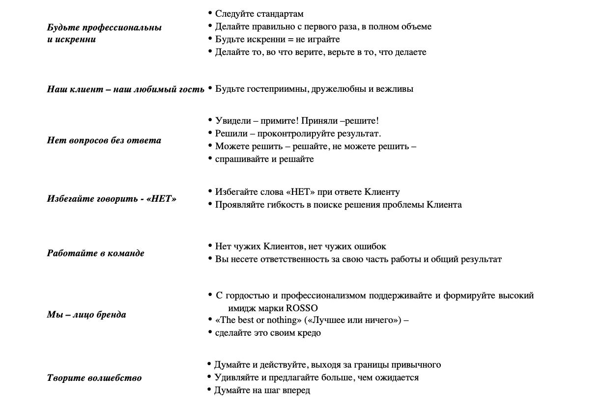
                <h3 class="main-kodeks-title" style="text-align: center; margin: 30px 0; font-size: 24px; color: #ff0000;">5. Отношения с деловыми партнерами и вовлеченность в общественность</h3>
                <p class="kodeks-text">
                    Компания стремится развивать надёжные взаимоотношения с нашими партнерами, поставщиками, группами заинтересованной общественности и другими лицами, с которыми у нас есть деловые отношения, основанные на взаимном доверии, понимании и уважении.
                    <br> <br>
                    Мы ожидаем, что наши партнеры будут придерживаться деловых принципов, совместимых с принципами нашей Компании.
                    <br> <br>
                    Компания взаимодействует с поставщиками товаров, сырья и услуг на принципах взаимной выгоды, прозрачности и полной ответственности за принятые на себя обязательства. Мы соблюдаем условия контрактов/договоров с деловыми партнерами и выполняем свои обязательства по отношению к ним.
                    <br> <br>
                    Компания стремится развивать партнерские отношения и выбирает честную конкуренцию.
                    <br> <br>
                    Мы выбираем поставщиков предлагающих наилучшие цены, качество, условия поставок, услуги и пользующихся хорошей репутацией. Мы честны и беспристрастны по отношению к нашим поставщикам.
                    <br> <br>
                    Мы не допускаем в своей деятельности предоставления деловым партнерам необоснованных и не предусмотренных законодательством льгот и привилегий, использование которых может негативно сказаться на репутации компании.
                    <br> <br>
                    Мы создаем себе репутацию надежного и приверженного этическим нормам членам нашего сообщества и нашей отрасли. Мы стремимся поддерживать на высоком уровне добросовестность и справедливость в нашей Компании. Если нам не удается добиться результатов путем добросовестных переговоров, действий и торговли, это может серьезно подорвать нашу репутацию, и мы можем лишиться доверия наших партнеров. Вы должны вести коммерческую деятельность честно и добросовестно и не пытаться получить незаслуженное преимущество над кем бы то ни было путем искажения фактов, манипуляции, сокрытия или злоупотребления привилегированной информацией, обмена или любой другой недобросовестной деловой практики.
                    <br> <br>
                    Наши деловые отношения строятся на доверии, и наши клиенты и поставщики рассчитывают на такое доверие. Любая служебная или не общедоступная информация о наших поставщиках или конкурентах не должна использоваться, если у Вас возникли подозрения в том, что она была добыта нечестным путем или направлена Вам ошибочно. Не забывайте о то, что все мы подчиняется нашим внутренним правилам и положениям, касающимся конфиденциальности и раскрытия информации
                    <br> <br>
                    Компания активно стремится быть компанией с высокой гражданской ответственностью и выполнять наши обязанности перед обществами и сообществами, в которых мы действуем.
                </p>
                <h3 class="main-kodeks-title" style="text-align: center; margin: 30px 0; font-size: 24px; color: #ff0000;">6. Правительственные законы и постановления</h3>
                <p class="kodeks-text">
                    Компания обязана подчиняться законам и постановлениям (РУз), применимым к любым коммерческим операциям.
                    <br> <br>
                    Компания обязуется проводить рабочие операции в соответствии с принципами справедливой конкуренции и применимому законодательству, и рассчитывает, что сотрудники будут действовать также.
                    <br> <br>
                    Компания соблюдает законы Республики Узбекистан и иные нормативные правовые акты, акты государственных органов и органов местного управления, международные ратифицированные соглашения и иные документы, относящиеся к ее деятельности.
                </p>
                <h3 class="main-kodeks-title" style="text-align: center; margin: 30px 0; font-size: 24px; color: #ff0000;">7. Честность в предпринимательской деятельности</h3>
                <p class="kodeks-text">
                    Компания и ее сотрудники не имеют права предлагать, давать, искать или получать, прямо или косвенно, никаких стимулов, дающих ей финансовую или деловую выгоду, и никто из служащих не имеет права предлагать, давать, или получать подарок или оплату, которая могла бы нести в себе выгоду подобного характера. Если служащий сомневается относительно сделанного ему предложения в рамках его обязанностей, то ему или ей следует обсудить ситуацию с его руководителем.
                    <br> <br>
                    Наша Компания берет на себя обязательство полностью выполнять все действующие законы, препятствующие отмыванию денег. Эти законы запрещают сделки, касающиеся денежных средств и имущества, в целях отмывания денег или дохода (то есть их легализации), полученных незаконным путем. Нарушение законов, направленных против отмывания денег, является уголовным преступлением. Если у Вас возникают какие-либо вопросы в отношении законодательства об отмывании денег, или кто-то склоняет Вас принять участие в таких действиях, Вы должны незамедлительно связаться со своим непосредственным руководителем или Генеральным директором.
                    <br> <br>
                    Законы о конкуренции о ограничении монополистической деятельности разработаны в целях обеспечения функционирования справедливой и конкурентной системы свободного рынка. Наша компания будет решительно конкурировать на рынке, но, вместе с тем, будет добросовестно исполнять действующие законы о конкуренции и ограничении монополистический деятельности во всех сферах деятельности. Это значит, что мы будем конкурировать, опираясь на качество услуг, доступность устанавливаемых цех и заслуженное доверие наших клиентов.
                    <br> <br>
                    Бухгалтерский учет Компании, другие отчеты и приложения должны точно описывать и отражать природу основных сделок.
                    <br> <br>
                    Ни один из нераскрытых или незафиксированных счетов, фондов или активов не будут установлены или поддержаны.
                </p>
                <h3 class="main-kodeks-title" style="text-align: center; margin: 30px 0; font-size: 24px; color: #ff0000;">8. Злоупотребления служебным положением. Неразглашение коммерческой, служебной тайны и конфиденциальной информации, а также защита персональных данных</h3>
                <p class="kodeks-text">
                    Все сотрудники Компании должны избегать личных действий и финансовых интересов, которые могли бы вступить в конфликт с их обязанностями перед Компанией.
                    <br> <br>
                    Сотрудники Компании и консультанты не должны искать выгоду для себя или других путем злоупотребления своим положением или собственностью компании.
                    <br> <br>
                    <strong>Коммерческая тайна</strong> - конфиденциальность информации, позволяющая ее обладателю при существующих или возможных обстоятельствах увеличить доходы, избежать неоправданных расходов, сохранить положение на рынке товаров, работ, услуг или получить иную коммерческую выгоду.
                    <br> <br>
                    <strong>Информация, составляющая коммерческую тайну</strong> - сведения о деятельности организации, её подразделений, отдельных работников, другая информация, принадлежащая организации, которая имеет действительную или потенциальную коммерческую ценность в силу неизвестности ее третьим лицам, к которой нет свободного доступа на законном основании и в отношении которой обладателем такой информации (организацией) введен режим коммерческой тайны.
                    <br> <br>
                    Под разглашением коммерческой и служебной тайны понимается: <br>
                    <br>• Разглашение сведений, обладание которыми входит в круг служебных обязанностей сотрудника, другим сотрудникам, у которых в силу своего служебного положения нет к ним доступа, а также третьим лицам.
                    <br>• Разглашение сведений, которые были получены случайным образом, сотрудникам, не имеющим доступа к данной информации, а также третьим лицам.
                    <br>• Получение информации, составляющей коммерческую тайну, с использованием специальных средств или путем противоправных действий.
                    <br><br><strong>Конфиденциальная информация</strong> - сведения о деятельности организации, её подразделений, отдельных работников, другая информация, принадлежащая организации, которая не имеет действительной или потенциальной коммерческой ценности, либо содержится в «Перечне сведений, которые не могут составлять коммерческую тайну»
                    <br> <br>
                    Сведения, составляющие коммерческую, служебную тайну, включают в себя деловые секреты, финансово-экономическую, технологическую информацию, технологические секреты (ноу-хау), любые анализы, прогнозы и планы, сведения, содержащиеся в служебной документации, кроме официально публикуемых, идеи и разработки, полученные сотрудниками в процессе трудовой деятельности. Информация, полученная в процессе выполнения служебных обязанностей, не должна использоваться для личной выгоды или для какой-либо другой цели кроме той, для которой она была получена.
                    <br> <br>
                    Для сохранения конфиденциальности и принятия мер, исключающих несанкционированный доступ к конфиденциальной информации, сотрудник обязуется:
                    <br>• Не передавать третьим лицам и не раскрывать публично сведения, составляющие коммерческую, служебную тайну без согласия Генерального директора.
                    <br>• Выполнять относящиеся к сотруднику требования приказов, инструкций и положений по обеспечению сохранности коммерческой, служебной тайны Компании.
                    <br>• В случае попытки посторонних лиц получить сведения о коммерческой, служебной тайне Компании, немедленно сообщить Генеральному директору.
                    <br>• Сохранять коммерческую тайну тех организаций, с которыми имеются деловые отношения у Компании.
                    <br>• Не использовать знание коммерческой, служебной тайны Компании для занятий любой деятельностью, которая в качестве конкурентного действия может нанести ущерб Компании.
                    <br> <br>
                    Об утрате или недостаче носителей коммерческой тайны, ключей от помещений, хранилищ, сейфов, личных печатей и о других фактах, которые могут привести к разглашению коммерческой, служебной тайны Компании, а также о причинах и условиях возможной утечки сведений, сотрудник, владеющий такими сведениями обязан немедленно сообщить своему руководителю и непосредственно Генеральному директору Компании.
                    <br> <br>
                    <strong>Персональные данные работника</strong> – информация, необходимая Компании в связи с трудовыми отношениями и касающаяся конкретного работника. К персональным данным относятся только те факты, сведения, события, обстоятельства частной жизни гражданина, которые характеризуют последнего как работника.Персональные данные работников могут содержаться в следующих документах, образующихся в процессе деятельности Компании:
                    <br>• комплексы документов, сопровождающие процесс оформления трудовых правоотношений гражданина (при решении вопросов о приеме на работу, переводе, увольнении и т.п.);
                    <br><br>• комплексы материалов по анкетированию, тестированию, проведению собеседований с кандидатами на должность, иные документы, связанные с подбором персонала;
                    <br>• подлинники и копии приказов по персоналу и трудовые договоры (дополнения, изменения и соглашения к трудовым договорам);
                    <br>• личные дела и трудовые книжки работников;
                    <br>• документы, содержащие основания к приказам по персоналу;
                    <br>• дела, содержащие материалы по повышению квалификации и переподготовке сотрудников, их аттестации, материалы служебных расследований, расследований несчастных случаев на производстве и т.п.;
                    <br>• справочно-информационный банк данных по персоналу и учетно-справочный аппарат (картотеки, журналы, базы данных, др.);
                    <br>• подлинники и копии отчетных, аналитических и справочных материалов, передаваемых руководителям структурных подразделений;
                    <br>• копии отчетов, направляемых в государственные органы статистики, налоговые инспекции, муниципальные и другие учреждения;
                    <br>• в дополнительных материалах, к которым относятся фотографии и любые иные данные, полученные от работника или имеющие отношение к работнику.
                    <br> <br>
                    Персональные данные работника относятся к категории конфиденциальной информации, отражающей как личную, семейную жизнь граждан, так и частную жизнь, частью которой является трудовая и общественная жизнь. Конфиденциальность, сохранность и защита персональных данных обеспечивается отнесением их к служебной и (или) профессиональной тайне.
                    <br> <br>
                    Защита персональных данных работников от неправомерного их использования или утраты обеспечивается работодателем за счет средств Компании.
                    <br> <br>
                    В целях обеспечения сохранности и конфиденциальности персональных данных работников организации все операции по оформлению, формированию, ведению и хранению данной информации должны выполняться только работниками отдела персонала, осуществляющими данную работу в соответствии со своими служебными обязанностями, зафиксированными в их должностных инструкциях.
                    <br> <br>
                    Ответы на письменные запросы других организаций и учреждений в пределах их компетенции и предоставленных полномочий даются в письменной форме на бланке организации и в том объеме, который позволяет не разглашать излишний объем персональных сведений о работниках организации.
                    Передача информации, содержащей сведения о персональных данных работников организации, по телефону, факсу, электронной почте без письменного согласия работника запрещается.
                </p>
                <h3 class="main-kodeks-title" style="text-align: center; margin: 30px 0; font-size: 24px; color: #ff0000;">9. Соблюдение Политики корпоративной культуры и деловой этики, ответственность за её нарушение</h3>
                <p class="kodeks-text">
                    Неукоснительное соблюдение положений настоящей Политики всеми работниками Компании является ключевым условием для успешной реализации миссии и закрепления корпоративных ценностей Компании, защиты интересов ее работников, деловых партнеров и клиентов.
                    <br> <br>
                    Все сотрудники Компании получают экземпляр данной Политики, а вновь принимаемые на работу сотрудникам экземпляр данной Политики вручается при их поступлении на работу в нашу Компанию. Вносимые в Политику дополнения и изменения будут доводиться до сотрудников. Эта Политика, а также все последующие дополнения и изменения будут размещены в общем доступе в электронном виде.
                    <br> <br>
                    В свете данной Политики руководители подразделений наделяются важной ролью и должны будут демонстрировать личную приверженность Политике корпоративной культуры и деловой этики, создавая рабочую атмосферу, которая способствует соблюдению данной Политики, и обеспечивая под своим руководством участие сотрудников в реализуемых Компанией программах, направленных на обучение и соблюдение всех положений Политики.
                    <br> <br>
                    Важнейшим критерием этического поведения является внутренняя самооценка работника Компании и моральная оценка со стороны его руководителей и коллег. Компания негативно оценивает какие-либо действия, в том числе поручения руководителей, заведомо способствующие нарушению норм данной Политики, а также сокрытие нарушений.
                    <br> <br>
                    Несоблюдение положений Политики может привести к нарушению норм применимого законодательства, что повлечет ответственность в соответствии с этим законодательством. Таким образом, каждый работник Компании обязан неукоснительно соблюдать требования Политики и нести ответственность за свое этическое поведение.
                    <br> <br>
                    Компания гарантирует, что для добросовестного работника, сообщившего о нарушении положений настоящей Политики или решившего пресечь нарушение, не наступят негативные последствия (в том числе дискриминация и иное преследование с чьей-либо стороны). Компания гарантирует, что меры ответственности будут применяться только на основе результатов объективного рассмотрения обстоятельств совершения нарушения, с учетом его тяжести и действий лица по устранению его последствий.
                    <br> <br>
                    Компания готова рассматривать любые сообщения о нарушении положений Политики и вместе с тем она гарантирует конфиденциальность при проведении проверки. Для обеспечения неукоснительного следования положениям Политики корпоративной культуры и деловой этики следует соблюдать следующие правила:
                    <br>• Руководствоваться нормами настоящей Политики в своей деятельности.
                    <br>• Знать и соблюдать нормы Политики.
                    <br>• Если Вы являетесь руководителем, быть образцом должного поведения, демонстрировать приверженность положениям Политики и важность их соблюдения.
                    <br>• В случае неясности каких-либо положений Политики или неопределенности действий в конкретной ситуации обращаться к непосредственному руководителю.
                    <br>• В любой ситуации, в том числе не регулируемой локальными нормативными актами или предполагающей выбор варианта поведения, руководствоваться положениями настоящей Политики, поступать справедливо, добросовестно и честно, при этом оценивать, как Ваше поведение повлияет на деятельность и репутацию Компании в текущий момент и в будущем.
                    <br>• По возможности доводить до сведения контрагентов Компании нормы настоящей Политики. <br> <br>
                    <strong style="color: #ff0000; ">Вам никогда не следует:</strong> <br>
                    <br>• Относиться пренебрежительно к соблюдению положений Политики.
                    <br>• Действовать без предварительных консультаций в соответствии с Политикой, если Вы не уверены в соответствии таких действий положениям Политики.
                    <br>• Препятствовать соблюдению положений Политики другими работниками Компании.
                    <br>• Оставаться безучастным в случаях, если Вам стало известно о происходящем или планируемом нарушении положений Политики.
                    <br>• Скрывать сведения о возможных, произошедших или планируемых нарушениях настоящей Политики.
                    <br>• Заявлять о якобы совершенном нарушении, распространяя заведомо ложные сведения.
                </p>
            </div>
        </section>
        <section class="site-main__etika etika">
            <div class="container">
                <div class="etika__inner">
                    <h2 class="etika__title">Этика поведения в Open Spase:</h2>
                    <h3 class="etika__mini-title">Уважаемые коллеги!</h3>
                    <p class="etika__text"><span class="etika__span"></span>В работе в Open Space* есть ряд преимуществ, например: быстрое решение задач за счёт близости расположения коллег, отсутствие ранговых барьеров, взаимопомощь, коллективное решение задач.</p>
                    <a href="https://docs.google.com/document/d/1bBdsm07q7RFQP0L0E7nn4L_FzYuKVYxc/edit?usp=drive_link&ouid=115023483865460299286&rtpof=true&sd=true" class="etika__link">И этот список может продолжаться</a>
                    <div class="etika__sub-inner subin">
                        <h3 class="subin__info">
                            Мы рады приветствовать вас в нашей дружной команде. Для вашего удобства, мы предоставляем информацию о расположении ключевых мест в нашем офисе, чтобы вы могли легко ориентироваться.
                        </h3>
                        <p class="subin__text"><strong style="display: block; color: #ff0000;">1. Санузель:</strong>
                            Женский туалет находится на 1-м этаже. Мужской туалет находится в подвале, и также имеется еще один мужской туалет на 2-м этаже. Вы можете найти их в соответствующих местах в офисе. Для вашего удобства, мы поддерживаем чистоту и порядок, и всегда следим за запасами необходимых принадележностей.
                        </p>
                        <div id="carouselExampleSlidesOnly" class="carousel slide" data-bs-ride="carousel">
                            <div class="carousel-inner">
                                <div class="carousel-item active">
                                    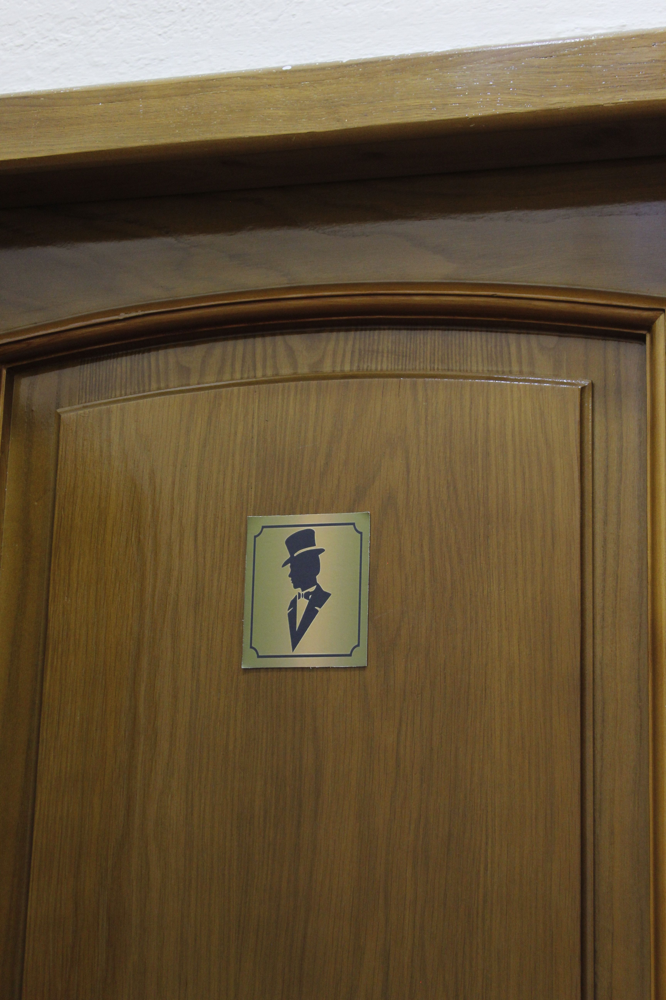
                                </div>
                                <div class="carousel-item">
                                    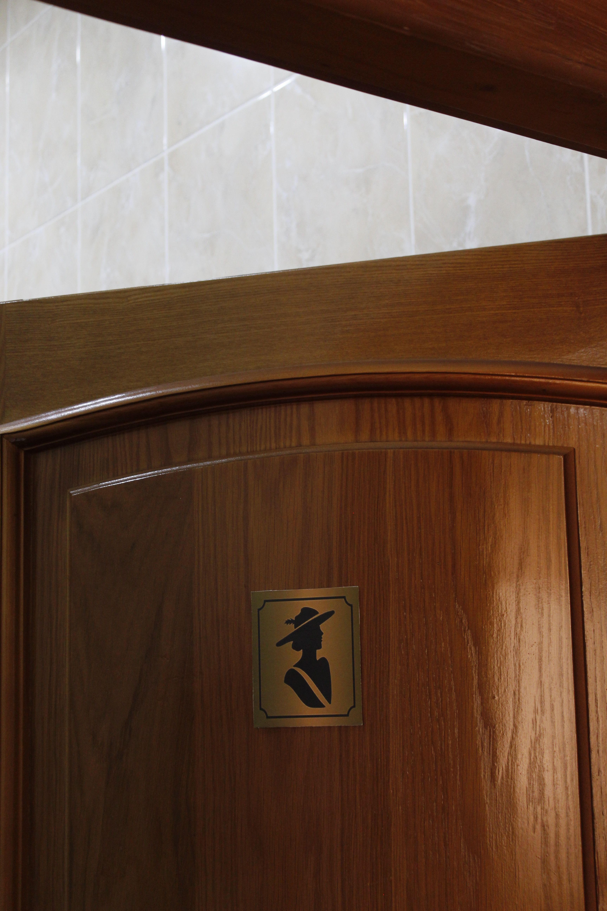
                                </div>
                            </div>
                        </div>
                        <p class="subin__text">
                            <strong style="display: block; color: #ff0000;">2. Кухня и столовая:</strong>
                            Наши уютные кухни и столовая находятся рядом друг с другом на 1-м этаже. Здесь вы можете насладиться разнообразными блюдами, приготовленными нашим поваром. Также в столовой доступна кофейная машина для вашего удовольствия. Пожалуйста, не забывайте убирать за собой.
                        </p>
                        <div id="carouselExampleSlidesOnly" class="carousel slide" data-bs-ride="carousel">
                            <div class="carousel-inner">
                                <div class="carousel-item active">
                                    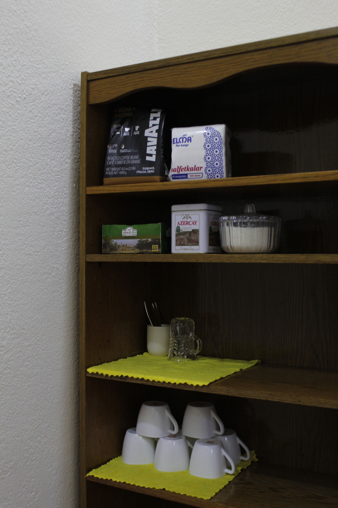
                                </div>
                                <div class="carousel-item">
                                    
                                </div>
                                <div class="carousel-item">
                                    
                                </div>
                                <div class="carousel-item">
                                    
                                </div>
                                <div class="carousel-item">
                                    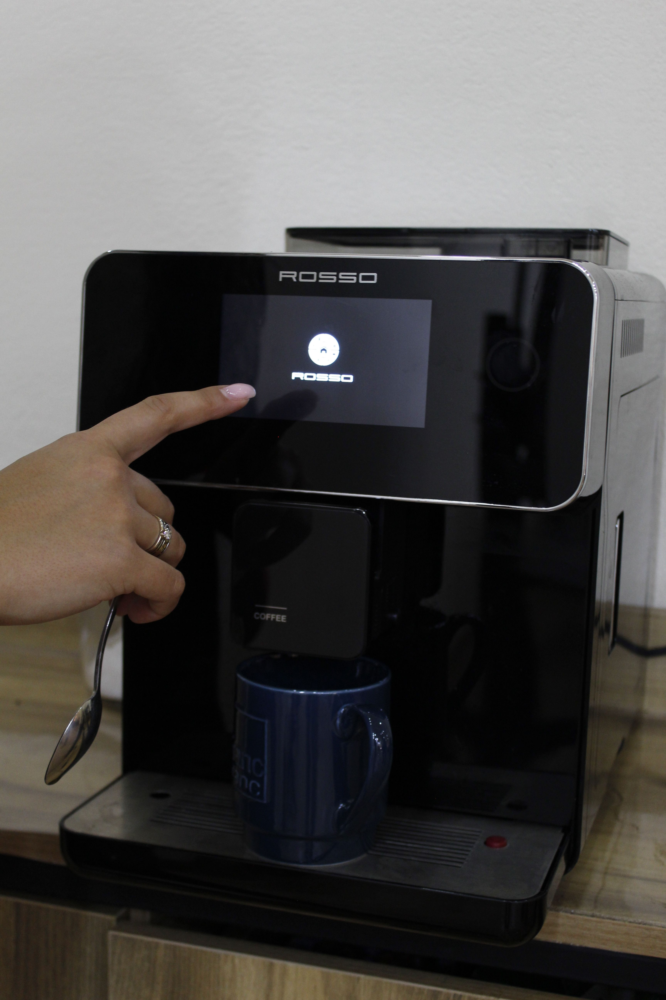
                                </div>
                            </div>
                        </div>
                        <p class="subin__text">
                            <strong style="display: block; color: #ff0000;">3. Конференционный зал:</strong>
                            Для бронирования конференционного зала, пожалуйста, обратитесь к менеджеру офиса. Наши менеджеры готовы помочь вам в этом вопросе и предоставить дополнительную информацию о доступности и правилах использования.
                        </p>
                        <div id="carouselExampleSlidesOnly" class="carousel slide" data-bs-ride="carousel">
                            <div class="carousel-inner">
                                <div class="carousel-item active">
                                    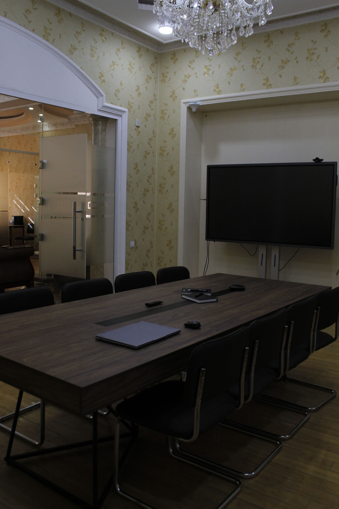
                                </div>
                                <div class="carousel-item">
                                    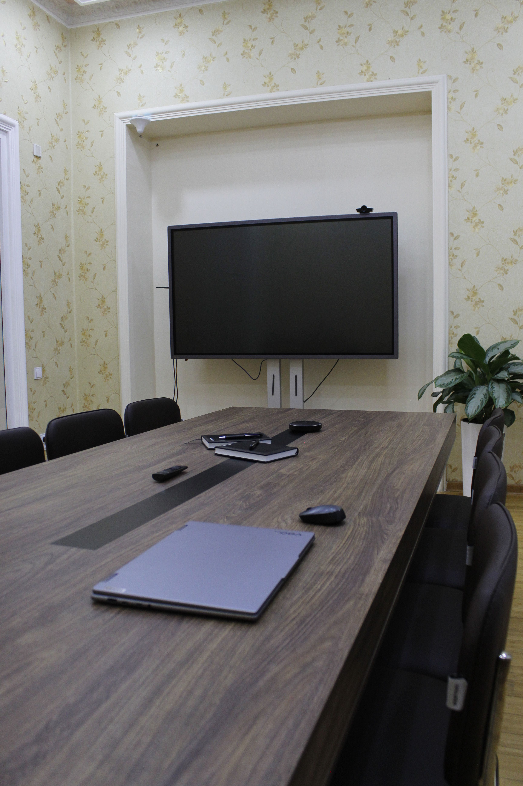
                                </div>
                                <div class="carousel-item">
                                    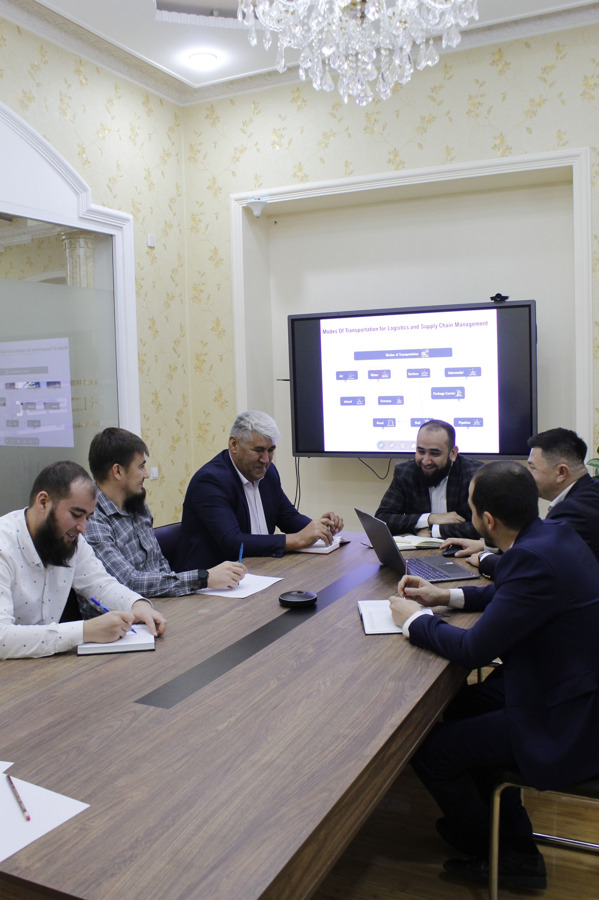
                                </div>
                            </div>
                        </div>
                        
                    </div>
                </div>
            </div>
        </section>
        <section id="iframe" class="site-main__iframe iframe">
            <div class="container">
                <div class="iframe__inner">
                    <h2 class="iframe__title" style="margin: 20px 0; text-align: center; color: #ff0000; font-size: 40px;">Где мы находимся.</h2>
                    <div style="position:relative;overflow:hidden;">
                        <a href="https://yandex.uz/maps/10335/tashkent/?utm_medium=mapframe&utm_source=maps" style="color:#eee;font-size:12px;position:absolute;top:0px;">Ташкент</a>
                        <a href="https://yandex.uz/maps/10335/tashkent/house/YkAYdAFjSE0GQFprfX54eX9mYQ==/?ll=69.263088%2C41.298170&utm_medium=mapframe&utm_source=maps&z=19" style="color:#eee;font-size:12px;position:absolute;top:14px;">Улица Занжирбог, 13 — Яндекс Карты</a>
                        <iframe class="iframe__link" src="https://yandex.uz/map-widget/v1/?ll=69.263088%2C41.298170&mode=whatshere&utm_source=share&whatshere%5Bpoint%5D=69.263181%2C41.298355&whatshere%5Bzoom%5D=17&z=19" frameborder="1" allowfullscreen="true" style="position:relative;"></iframe>
                    </div>
                    <p class="last__text">Мы надеемся, что эта информация поможет вам легко адаптироваться и чувствовать себя как дома в нашем офисе. Если у вас возникнут вопросы, не стесняйтесь обращаться к нашему персоналу. Пусть ваше время в "Welcome book" будет комфортным и продуктивным! 
                        <br><br>
                        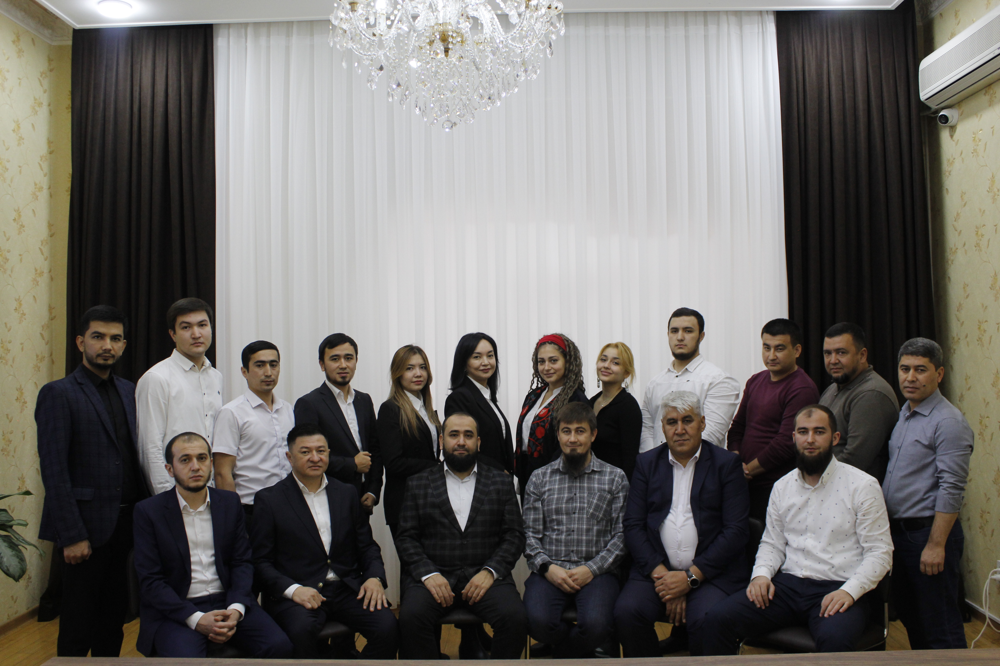
                        <strong style="display: block; text-align: center; margin-top: 30px;"> БЛАГОДАРИМ ЗА ВНИМАНИЕ. ЖЕЛАЕМ ВАМ УСПЕХОВ! <br>Добро пожаловать в нашу команду!</strong>
                    </p>
                </div>
            </div>
        </section>
    </main>
    <footer class="site-footer">
        <div class="footer-start-wrapper">
            <div class="container">
                <div class="footer-start">
                    <h3 class="footer-start-third-title">
                        Connect with us
                    </h3>
                    <p class="connect-link add-link">
                        <a class="contact-link" href="tel:+998770550550">+998 77 0550550</a>
                    </p>
                    <p class="connect-link">
                        <a class="gmail-link" href="mailto:info@rosso.uz">info@rosso.uz</a>
                    </p>
                    <p class="connect-link">
                        <a class="map-link" href="https://yandex.uz/maps/-/CDqGm4I5" target="_blank">Ташкент, улица Занжирбог, 13</a>
                    </p>
                </div>
                <ul class="connect-list">
                    <li class="connect-list-item first-item-img"><a class="connect-item-link" href="#"></a></li>
                    <li class="connect-list-item second-item-img"><a class="connect-item-link" href="https://www.facebook.com/rosso.uzbekistan"></a></li>
                    <li class="connect-list-item third-item-img"><a class="connect-item-link" href="#"></a></li>
                    <li class="connect-list-item last-item-img"><a class="connect-item-link" href="https://www.instagram.com/rosso.uzbekistan/?utm_source=ig_web_button_share_sheet&igshid=YzAwZjE1ZTI0Zg=="></a></li>
                </ul>
            </div>
        </div>
    </footer>
    
    <template id="js-template">
        <li class="temp-item">
            
            <div class="temp_item-wrapper">
                <a href="#" class="temp__name"></a>
                <p class="temp__position"></p>
            </div>
        </li>
    </template>
    
    <template id="js-summary">
        <summary class="temp-item">
            
            <div class="temp_item-wrapper">
                <a href="#" class="temp__name"></a>
                <p class="temp__position"></p>
            </div>
        </summary>
    </template>
    <script src="https://cdn.jsdelivr.net/npm/bootstrap@5.3.2/dist/js/bootstrap.bundle.min.js" integrity="sha384-C6RzsynM9kWDrMNeT87bh95OGNyZPhcTNXj1NW7RuBCsyN/o0jlpcV8Qyq46cDfL" crossorigin="anonymous"></script>
    <script src="./js/users.js"></script>
    <script src="./js/main.js"></script>
</body>
</html>

